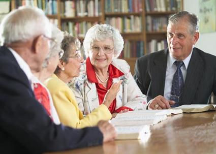
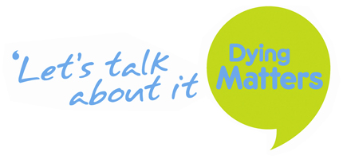

Registered Charity No:1158175
Lewisham Pensioner Campaigns
All of our suggestions help us improve this site so feel free to email any suggestions for future campaigns to: azube002@gold.ac.uk
"We aim to provide memebers of the community with campaigns that they are actually interested in through listening and discussing their ideas with others"
Campaign Discussions
We structure meetings in our community centre to encourage ideas and discussion.
Often we have alot of individuals that are concered with issues within their community. However sometimes indivuals have trouble mentioning these concerns.
These meetings are a place where antendees can have their voice heard as well as discussing these important topics such as:
- Public Services
- Local/National Campaigns
- Transport and Care

What have we achieved so far?
We have achieved alot with the kind help of the individuals in lewisham. For example the on going fight in saving the services at Lewisham Hospital. The Hard working staff at Lewisham Hospital are undergoing alot right now espically considering there arent alot of people looking to go into that sector.Whilst this has been tough, it has brought alot of different groups together. Working with Important foundations such as Keep warm and Well and dying matters are also campaigns that we have promoted before. Its very important for awareness to be spread about these organistations.
In addition to this there has been a partnership with alot of local IT products and services that being used to help individuals ease into technology through the use of Tablets and computers.Often leading to the knowledge of cheaper services like Utility and shopping!
